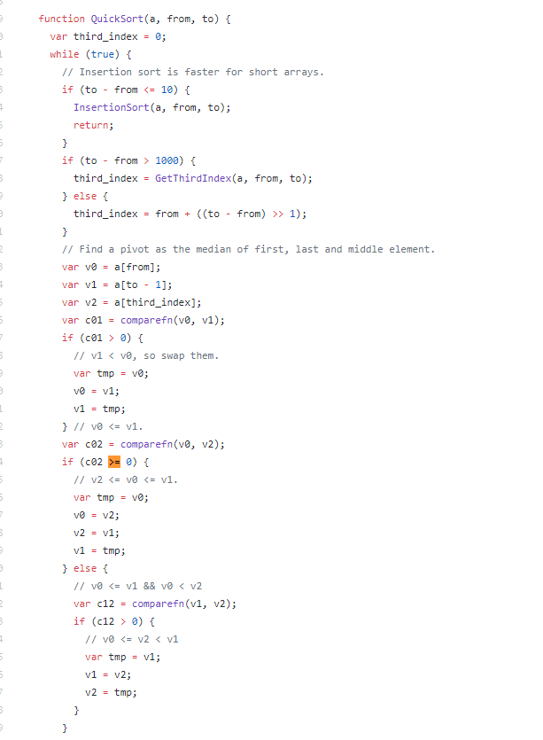

函数返回布尔时，排序不正常
同事说遇到了一个奇怪的bug，找我一起看，他的代码
1 | var arr = [1,3,2,4,5,8,6,9,11,7,0]; |
wft！这有点颠覆我对js的认识啊，于是自己进行了测试，发现怎么测试结果都是正常的从小到大排序
仔细查阅了mdn文档以及网上的资料发现，例子中的返回值都是以大于0，小于0和0来区别，并且数组长度大于10和小于等于10时，处理方法不一样。在大于10时，浏览器使用了一种快排的方法对数组进行排序，小于10时则是冒泡排序。
快排时会出现问题
于是进行进一步测试，当数组长度大于10时，果然数组的排序不尽如人意。似乎是快排的时候出了问题，于是翻了一下github上V8项目中快排的代码，发现代码中的使用了 >= 来判断是否需要交换位置。所以返回false会使得if成立，而返回小于0则不会。

综上，在sort的函数中，始终返回数值类型而不返回布尔类型就可以避免出现bug。
浏览器新版本支持度
顺便一提，测试时发现，在新版本的谷歌之中（70）和edge（17），不会处理返回布尔类型的情况。不管是冒泡还是快排。1
2
3
4var arr = [1,3,2,4,5,8,6,9];
arr.sort(function(a, b) {return a > b});
// [1, 3, 2, 4, 5, 8, 6, 9]
快排算法
最后附上阮大大的对快排算法详细解释的文章